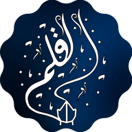

AL-QALAMHai il libro? Attiva le funzioni.
Funzioni del libro attive · Du’a imparati: 0
Du’a per la protezione e la sicurezza · pag. 58
Pagina 58 del libro
Du’a per la protezione dalle calamità e dai pericoli
L'audio non si è caricato. Riprova, o controlla la connessione.
إِنَّا لِلَّهِ وَإِنَّا إِلَيْهِ رَاجِعُونَ، اللَّهُمَّ أْجُرْنِي فِي مُصِيبَتِي وَأَخْلِفْ لِي خَيْرًا مِنْهَا
Innā lillāhi wa innā ilayhi rāji’ūn, Allāhumma ’ajurnī fī musībatī, wa ’akhlif lī khayran minhā
Ad Allah apparteniamo e a Lui faremo ritorno. O Allah, ricompensami per la mia afflizione e sostituiscila per me con qualcosa di meglio.
Sahih Muslim 918b